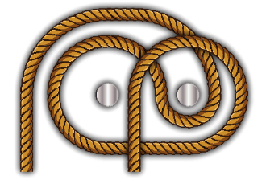
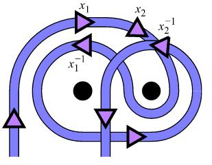

By Eric D. Demaine, Martin L. Demaine, Yair N. Minsky, Joseph S. B. Mitchell, Ronald L. Rivest, Mihai Patrascu
We want to hang a picture on the wall with \(n\) nails such that with the removal of \(k\) arbitrary nails, the picture fall.
Here is an example of how to shang a picture on \(2\) nails so that with the removal of any arbitrary nail, the picture falls:
Try it here by Antoine Lorcy

A \(\textbf{free group}\) on \(n\) generators, \(F_n\) is a group whose elements are strings on the alphabet \(\{x_1,x_1^{-1},x_2,x_2^{-1},...,x_n,x_n^{-1}\}\)
and the binary operation on the group is string concatenation. We think of the symbol \(x_i\) as the inverse of \(x_i^{-1}\).
The elements in \(F_n\) are called \(\textbf{words}\).
|
e |
\(x_1\) |
\(x_1^{-1}\) |
\(x_2\) |
\(x_2^{-1}\) |
--- |
| e |
e |
\(x_1\) |
\(x_1^{-1}\) |
\(x_2\) |
\(x_2^{-1}\) |
... |
| \(x_1\) |
\(x_1\) |
\(x_1x_1\) |
e |
\(x_1x_2\) |
\(x_1x_2^{-1}\) |
... |
| \(x_1^{-1}\) |
\(x_1^{-1}\) |
e |
\(x_1^{-1}x_1^{-1}\) |
\(x_1^{-1}x_2\) |
\(x_1^{-1}x_2^{-1}\) |
... |
| \(x_2\) |
\(x_2\) |
\(x_2x_1\) |
\(x_2x_1^{-1}\) |
\(x_2x_2\) |
e |
... |
| \(x_2^{-1}\) |
\(x_2^{-1}\) |
\(x_2^{-1}x_1\) |
\(x_2^{-1}x_1^{-1}\) |
e |
\(x_2^{-1}x_2^{-1}\) |
... |
...
|
--- |
... |
... |
... |
... |
... |
We can abstract the weaving of the rope around the nails using a free group.
If we need to weave the rope around two nails, if the rope pass clockwise over(on top) nail \(i\) we use \(x_i\) to denote it.
If the rope pass counterclockwise over a nail \(i\), we use \(x_i^{-1}\) to denote it.
For example, consider the weaving:

The element in \(F_2\) associated with this weaving is \(x_1x_2x_1^{-1}x_2^{-1}\).
This can be seen be travelling from left of the rope and read the group element wheever the rope pass over a nail.
In this representation, removing a nail \(i\) correspond to removing all ocurrence of \(x_i, x_i{-1}\).
For example, removing nail \(1\) in the above example, we get the word \(x_2x_2^{-1}=e\) so the picture falls.
Given a group \(G\) and \(g,h \in G\), the \(\textbf{commutator}\) of \(g,h\) is denoted by \([g:h]\) and it is equals to \(ghg^{-1}h^{-1}\)
A \(\textbf{picture hanging on n nails}\) is just a free group representation of a weaving of a rope around \(n\) nails.
Namely, it is just a word in \(F_n\). The \(\textbf{length}\) of the hanging is just length of the word representing the weaving of the rope.
For example, the picture hanging in the above example is \(x_1x_2x_1^{-1}x_2^{-1}\) and its length is \(4\).
Given \(n \geq 1\), there is a picture hanging on \(n\) nails of length at most \(2n^2\) that fails the picture whenever we remove any nail.
also, the symbole \(x_i, x_i^{-1}, i \in [n]\) appear at most \(2n\) times.
we already have a solution to when we have only \(2\) nails, namely, \(s_2 = x_1x_2x_1^{-1}x_2^{-1}\). We use the notation \(s_n\) to denote the
solution to when there is \(n\) nails. Then here is a solution for \(n\) nails:
\[ s_n =[s_{n-1},x_n] \]
the length of \(s_n\) is \(2^n+2^{n-1}-2\) by induction.
Given \(n \geq 1\), there is a picture hanging on \(n\) nails of length polynomial in \(n\) that fails the picture whenever we remove any nail.
Given nails \(1,...,n\), We denote \(E(i:j)\) the word solution for when using only nails \(i\) to \(j\).
for example,
\[E(i:i) =x_i \]
and
\[E(i:i+1) = [x_i,x_{i+1}]=x_ix_{i+1}x_i^{-1}x_{i+1}^{-1} \]
and a recursive solution can be given as :
\[E(i:j) = [E(i: \lfloor \frac{i+j}{2} \rfloor), E(\lfloor \frac{i+j}{2}+1 \rfloor :j )]\]
We now turn to a general theory of the puzzle.
Given a picture hanging \(p\) on \(n\) nails, the \(\textbf{fall function}\) \(f_p(r_1,...,r_n)\) where each \(r_i\) is a boolean value is
a boolean function that evaluate to true when removing the nail \(i\) for which \(r_i\) is true.
For example, the fall function for the above picture hanging \(x_1x_2x_1^{-1}x_2^{-1}\) is \(r_1 \vee r_2\).
A fall function \(f_p(r_1,...,r_n)\) is \(\textbf{monotone}\) if \(r_1 \leq r_1', r_2 \leq r_2',...,r_n \leq r_n'\) implies that
\(f_p(r_1,...,r_n) \leq f_p(r_1',...,r_n')\).
We establish in the paper that monotone boolean function as define above are exactly the fall function of some picture hanging.
For any two words \(p,q\) in the free group on \(x_1,....,x_n\), then equation :
\[p^2x_1p^2x_1^{-1} = (qx_2qx_2^{-1})^2\]
is equivalent to \((p=1) \wedge (q=1)\).
It is well known that monotone boolean function can be constructed using boolean "and" and boolean "or" only.
We use the above lemma to construct the boolean and operation:
\[P \wedge q = p^2x_1p^2x_1^{-1}(qx_2qx_2^{-1})^{-2} \]
because by above lemma, \(p^2x_1p^2x_1^{-1}(qx_2qx_2^{-1})^{-2} =1 \iff (p=1) \wedge (q=1)\)
For any two words \(p,q\) in the free group on \(x_1,....,x_n\), then equation :
\[ (px_1^spx_1^{-s})(qx_2^{t}qx_2^{-t})(px_1^spx_1^{-s})^{-1}(qx_2^tqx_2^{-t})^{-1}=1 \forall s,t = \pm 1 \]
is equivalent to \((p=1) \vee (q=1)\).
So the above word equation can be simplify to \([ps_1^spx_1^{-s}, qx_2^tqx_2^{-t}] =1 \forall s,t = \pm 1\)
So we can therefore construct the "or" logical operation operation by using the above two lemma.
So this is it,